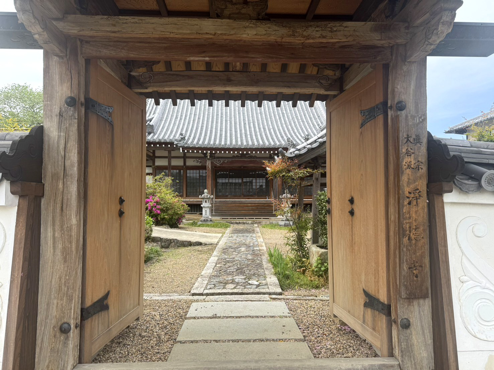
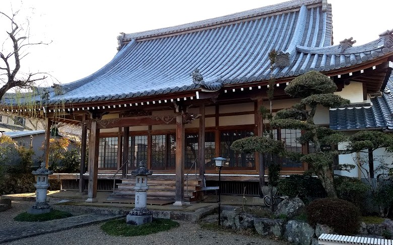
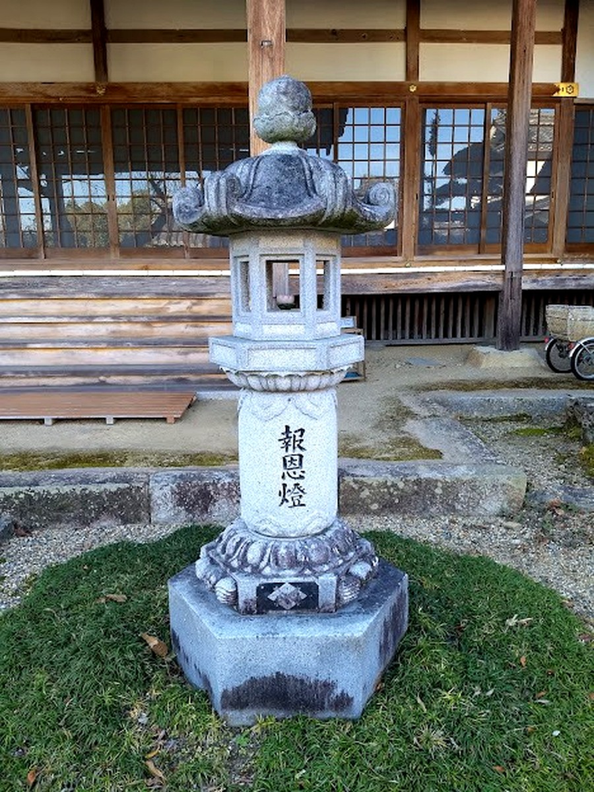
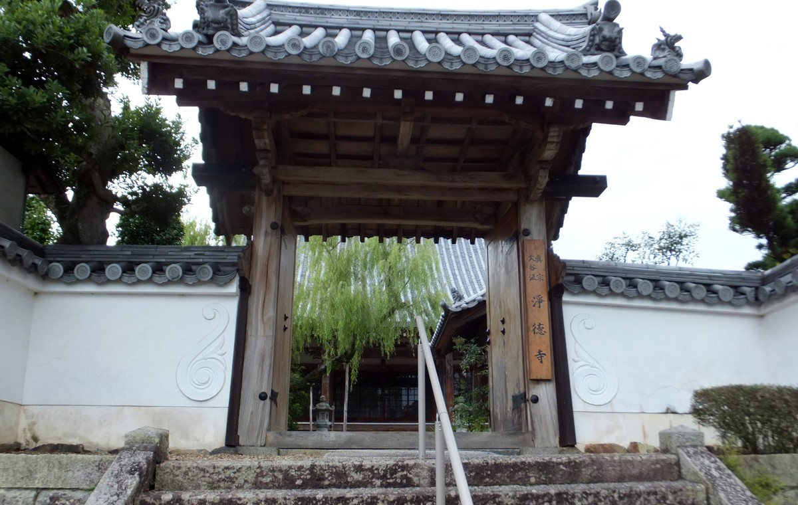
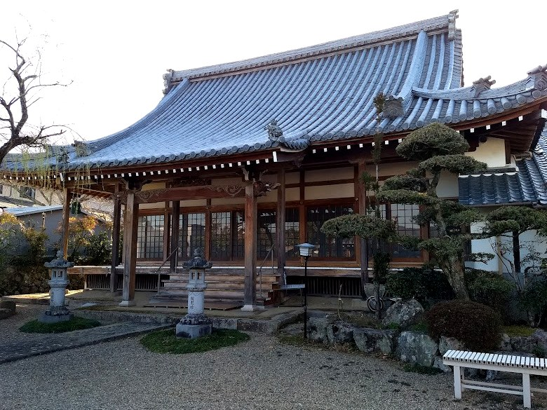
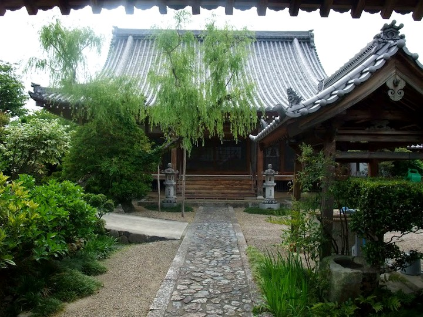
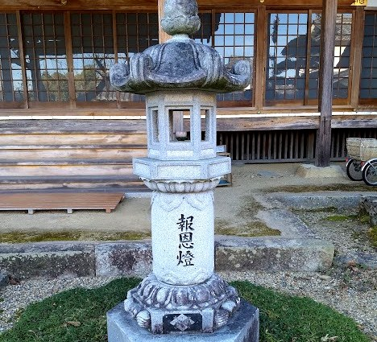

浄徳寺が永代にわたり供養
寺院が責任をもってご供養を続けます。安心してお任せいただけるよう、落ち着いたご案内を心がけています。

初めて永代供養をご検討の方へ
永代供養は、これまでお寺とのご縁が少なかった方にとって、分かりづらい言葉や不安が多いものです。 浄徳寺では、まず安心してご相談いただけることを大切にしています。
そのような方にも、できるだけやさしくご案内いたします。
浄徳寺の永代供養墓
寺院が責任をもってご供養を続けます。安心してお任せいただけるよう、落ち着いたご案内を心がけています。
ご遺骨が他の方と合葬されることはありません。無縁仏の心配なく、お守りいただけます。
お寺とのご縁が初めての方にもご検討いただきやすいよう、宗派を問わずご案内しています。
掲載している金額には、永代使用料・永代管理料・納骨法要料が含まれています。
仏様の人数制限なくご相談いただけます。二体目以降は継続法要料3万円をお願いしております。
お電話は24時間対応可能です。まずは気軽に相談したい方にも安心していただけるようにしています。
初めての方にもわかりやすく
永代供養とは、お寺が永代にわたりご供養を続けていく供養のかたちです。 お墓の継承や管理に不安がある方、ご家族に大きな負担をかけたくない方にも選ばれています。
浄徳寺では、初めての方にも落ち着いてご検討いただけるよう、電話でのご相談から丁寧にご案内いたします。 「まずは話だけ聞いてみたい」という段階でも問題ありません。
お急ぎで決める必要はありません。分からない点をひとつずつ整理するところからご相談いただけます。
掲載料金に何が含まれているかを明記しているため、初めての方にもご検討いただきやすい内容です。
歴史ある地域に根ざしたお寺として、落ち着いた環境のなかでご供養いただけます。
サービス・料金
掲載している金額には、永代使用料・永代管理料・納骨法要料が含まれています。
25万円
29万円
33万円
37万円
納品袋をご用意いたします。
ご検討からご相談まで
まずはお電話で、お悩みやご希望をお聞かせください。
永代供養や費用について、初めての方にも分かりやすくご案内いたします。
その場で決める必要はありません。落ち着いてご検討ください。
ご希望が固まりましたら、納骨や必要な流れをご案内いたします。


お寺紹介
浄徳寺は真宗大谷派の寺院です。能勢電鉄妙見線の「多田駅」「鼓滝駅」「鶯の森駅」が最寄りであり、歴史ある地域に根ざしたお寺です。
境内は落ち着いた雰囲気があり、初めて訪れる方にも「きちんとしていそう」「安心できそう」と感じていただける場であることを大切にしています。
境内の写真を見る境内の雰囲気
実際の雰囲気が伝わるように、山門・本堂・境内の様子を掲載しています。 初めての方にも、落ち着いた環境のなかでご検討いただけることを感じていただければ幸いです。




お問い合わせ
初めての方にも分かりやすくご案内いたします。24時間対応可能です。
兵庫県川西市西多田1-12-8
アクセス
〒666-0138
兵庫県川西市西多田1-12-8